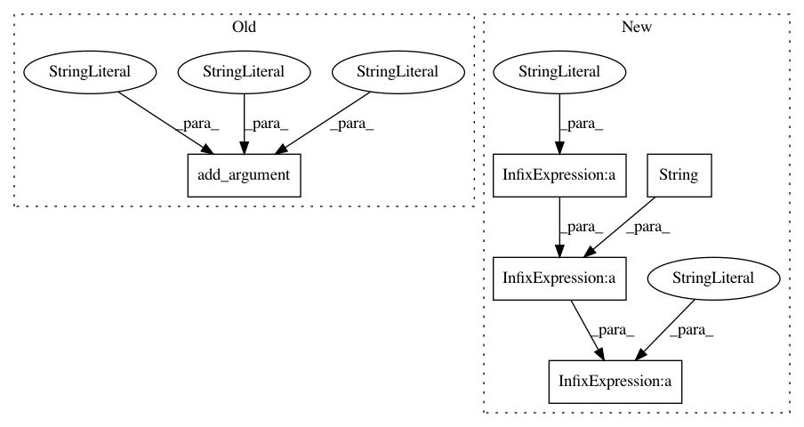

1bc48fb2f66ecaa22107504658037d111c278eb7,tensorforce/examples/async_helper.py,,main,#,22
Before Change
parser.add_argument("-r", "--repeat-actions", type=int, default=1, help="???")
parser.add_argument("-m", "--monitor", help="Save results to this file")
parser.add_argument("-i", "--task_index", default=0, help="Task index")
parser.add_argument("-p", "--is_ps", default=0, help="Is param server")
args = parser.parse_args()
//TODO create cmds, pass through config
After Change
//TODO create one call for worker, parameter server, also kill old grpcs
cmds = ""
for i in xrange(args.num_workers):
cmds += "python openai_gym_async.py Pong-ram-v0 -c examples/configs/vpg_agent.json -n examples/configs/vpg_network.json" \
" -w " + str(args.num_workers) + " -i" + str(i) + " -p 0 && "
// add one PS call
cmds += "python openai_gym_async.py Pong-ram-v0 -c examples/configs/vpg_agent.json -n examples/configs/vpg_network.json" \
" -w " + str(args.num_workers) + " -i 0 -p 1"
In pattern: SUPERPATTERN
Frequency: 3
Non-data size: 5
Instances
Project Name: reinforceio/tensorforce
Commit Name: 1bc48fb2f66ecaa22107504658037d111c278eb7
Time: 2017-03-06
Author: mi.schaarschmidt@gmail.com
File Name: tensorforce/examples/async_helper.py
Class Name:
Method Name: main
Project Name: dPys/PyNets
Commit Name: 3aea1bad7b8bbd2a581924e6884bbbd897f0f831
Time: 2018-01-02
Author: dpisner@utexas.edu
File Name: pynets/pynets_run.py
Class Name:
Method Name:
Project Name: dPys/PyNets
Commit Name: 96e482fd26c87a9d54ac1c8c53e00a93a2c6df2e
Time: 2017-11-04
Author: dpisner@utexas.edu
File Name: pynets/pynets_run.py
Class Name:
Method Name: